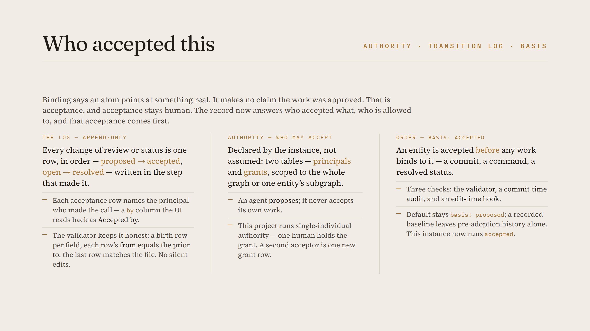

[COVER images/acceptance.png — set as the article cover via LinkedIn's cover button]

konspekt keeps the state of an AI-driven project as a typed graph: goals, tasks, decisions, and the verbatim exchanges they came from. The last wave of work closed the gap where a whole conversation could happen and leave nothing the record can see — every piece of work now binds to the graph. But binding only establishes that an atom points at something real. It makes no claim that the work was approved. That claim is acceptance, and acceptance stays human. The work since then is about making that human judgment accountable: recording who accepted what, deciding who is allowed to, and requiring that acceptance come before the work.
Binding is referential integrity — an atom references an entity that exists, the way a foreign key requires a valid parent. It is deliberately silent on correctness. Acceptance is the separate, human act of saying "yes, this is right, keep it" — in plain words, in the conversation. There is no special accept command to learn: you say it, and the entry is marked accepted. The two were always distinct in the design; what was missing was a durable, attributable record of the second one. A graph that shows a decision as accepted should also answer: accepted by whom, and when?
konspekt now keeps an append-only transition log. Every assignment of an atom's review or its status is one row, written in the same step that made the change, in order: a decision moving proposed → accepted, a task moving open → active → resolved. The log is the history the entity files themselves do not carry — a file shows the current state, the log shows how it got there. Three rules keep it honest and the validator enforces them: every entity and edge has a birth row for each field it uses, each row's "from" equals the previous row's "to", and the last row agrees with the value the file currently stores. No silent edits; no state the log cannot explain.
Each row that records an acceptance names the principal who made it — a "by" column on the log. An atom's birth row (its first, proposed) names the proposer; the row that flips it to accepted names the acceptor. From that, the interface answers the question directly: open any atom in the local UI or the IntelliJ plugin and its details show "Accepted by —". The attribution is not a UI decoration computed on the fly; it is read back from the log, so it is exactly as durable and portable as the rest of the graph.
Who is allowed to accept is declared by the instance, not assumed by the tool. Two small tables under the instance say it: principals (the identities — each human or agent, some holding a grantor role) and grants (an append-only log of who may accept which part of the graph, by scope). The scope is the whole graph or one entity and its subgraph. Two rules follow from this and the validator checks them: an acceptance must name a principal that held a grant over that atom when the row was written, and an agent may accept only an atom someone else proposed — never its own. So the maintainer model is intact at the data layer: the agent proposes, a granted human accepts.
konspekt's own project runs the simplest shape of this — single-individual authority: one human is the sole principal with a grant on the entire graph; the agent principal holds none. Adding a second acceptor is one new row in the grants table, issued by a grantor. A second adopter copies the instance and writes its own two tables.
The last piece is ordering. An instance can set basis: accepted, under which an entity must be accepted before any work binds to it — a commit, an executed command, or a resolved status. Three checks enforce it: the validator reports work bound to an unaccepted entity (and a resolved node whose attached decision is still proposed); a commit-time audit reports a commit authored before its entity was accepted; and an edit-time hook declines a change outside the instance while the conversation's bound entity is not yet accepted. The default stays basis: proposed, so existing instances are unaffected; an instance adopts accepted deliberately, and a recorded baseline marks the point from which the ordering is enforced, leaving the pre-adoption history alone.
konspekt's own project now runs basis: accepted. Turning it on was itself the test: the decisions and tasks that had work already bound to them were reviewed and accepted, each acceptance written to the log under the one human's authority, before the switch would pass.
This governance layer is what lets konspekt's agent model scale past a single assistant. The direction is an MCP-mode fleet: several agents working a project in parallel, each proposing atoms into the same graph. Many proposers are only safe when acceptance is named and constrained — one human (or a defined set) holds the grant, every acceptance is attributed, and no agent can accept its own proposal. The authority model and the transition log are the floor that makes a fleet auditable rather than a crowd.
Acceptance, authority, and ordering are defined in the specification — the authority model in spec/architecture/AUTHORITY.md and acceptance-before-work in spec/architecture/REVIEW.md. Which identities an instance declares, who holds a grant, and whether it runs basis: accepted are host choices, so they differ per instance; the rules that check them are the same everywhere.
All of it is on main: github.com/finos-labs/konspekt
#AI #KnowledgeGraphs #Accountability #OpenSource #FINOS #konspekt